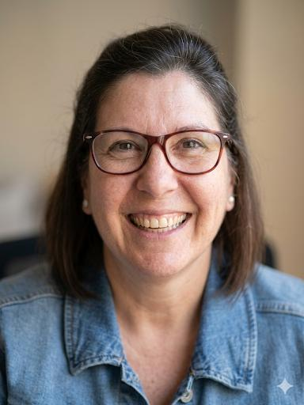
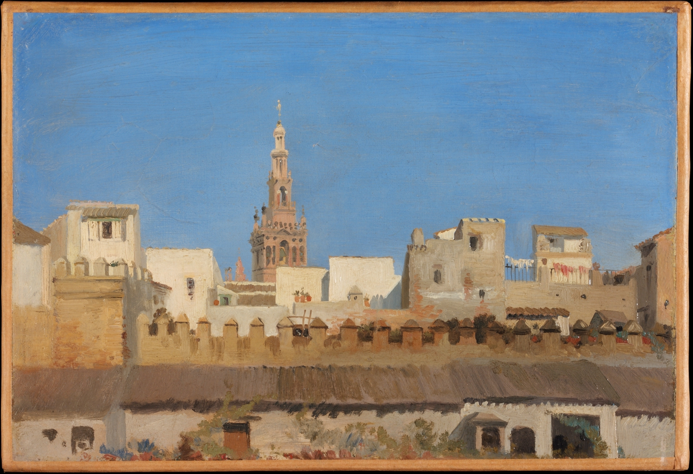
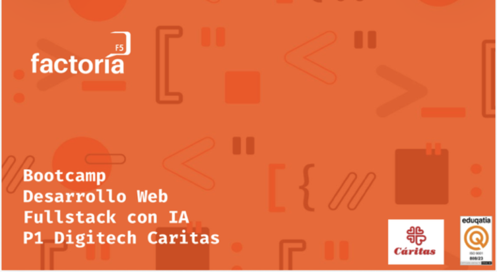

MARÍA JOSÉ RODRÍGUEZ RAMOS
Desarrolladora Web en Formación
Lugar de Nacimiento y Nacionalidad
Soy de Sevilla. Mi nacionalidad es Española. Crecer en este lugar me ha permitido valorar la cultura, las tradiciones y la calidez de su gente.

Hobbies
En mi tiempo libre, me encanta leer, es una actividad que me permite desconectar y sumergirme en diferentes mundos, potenciar mi creatividad y ampliar mi conocimiento.
Estudios
He completado mis estudios en Educación Infantil en Ribamar.
Actualmente estoy realizando una Formación de Bootcamp, Desarrollo Web, Full Stack con IA en Factoría5, a traves del programa P1 Digitech Caritas, donde estoy adquiriendo habilidades en desarrollo web, programación y tecnologías relacionadas. Esta formación me está brindando la oportunidad de aprender y crecer en el campo de la tecnología, preparándome para enfrentar los desafíos del mundo digital actual.

Historia
He tenido la oportunidad de trabajar como Auxiliar Administrativa y Especialista en Atención al Cliente con más de 20 años de experiencia en gestión de cuentas, contabilidad, soporte administrativo y ventas en empresas de primer nivel (El Corte Inglés, Carrefour). Destaco por mi alta capacidad de adaptación, rigor en la elaboración de informes y un trato excelente al público. A lo largo de este camino he superado retos que me han enseñado el valor de la resiliencia y el aprendizaje continuo. Estoy emocionada por lo que está por venir con este curso de Formación.